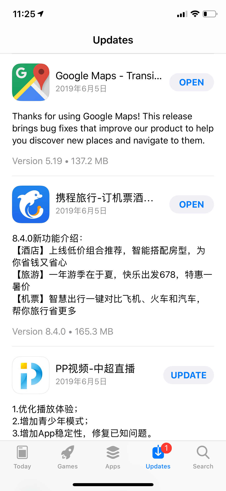
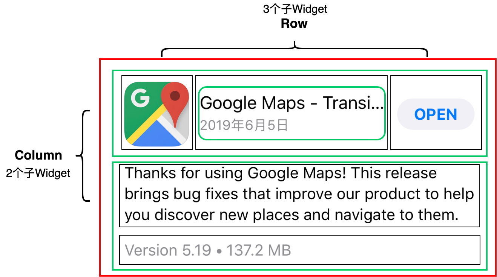
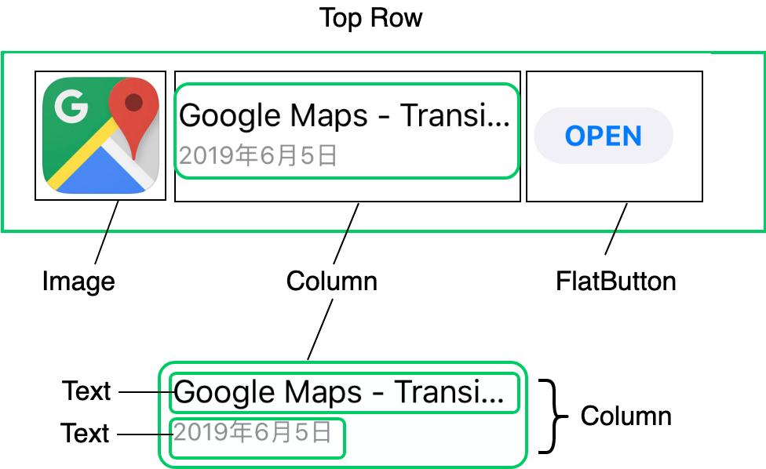
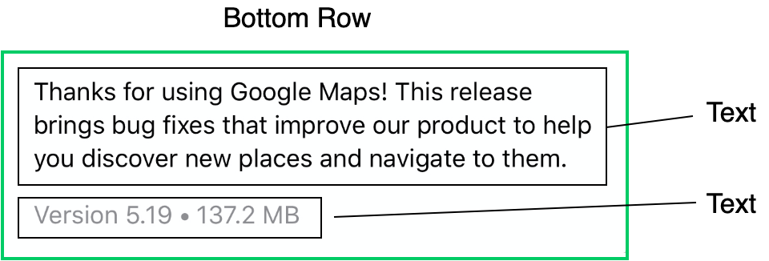
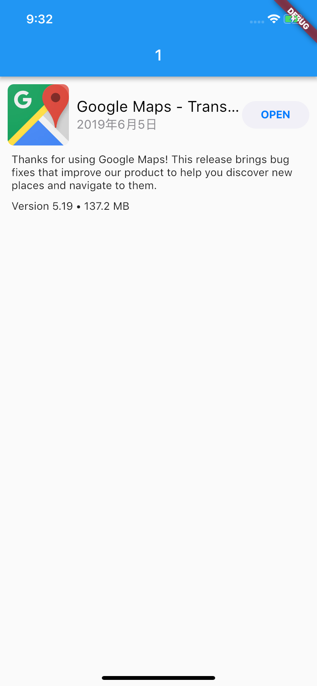
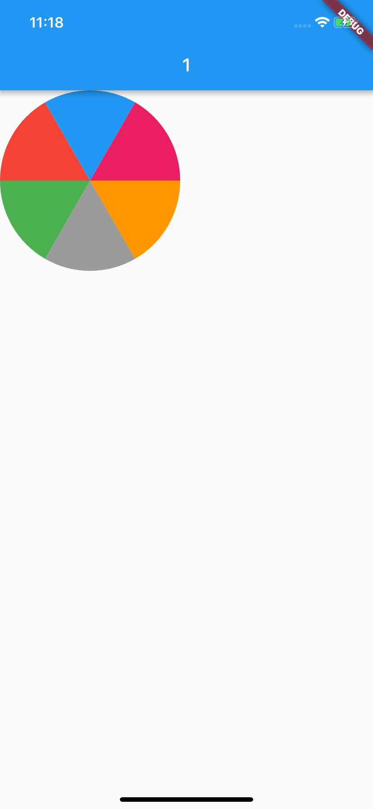
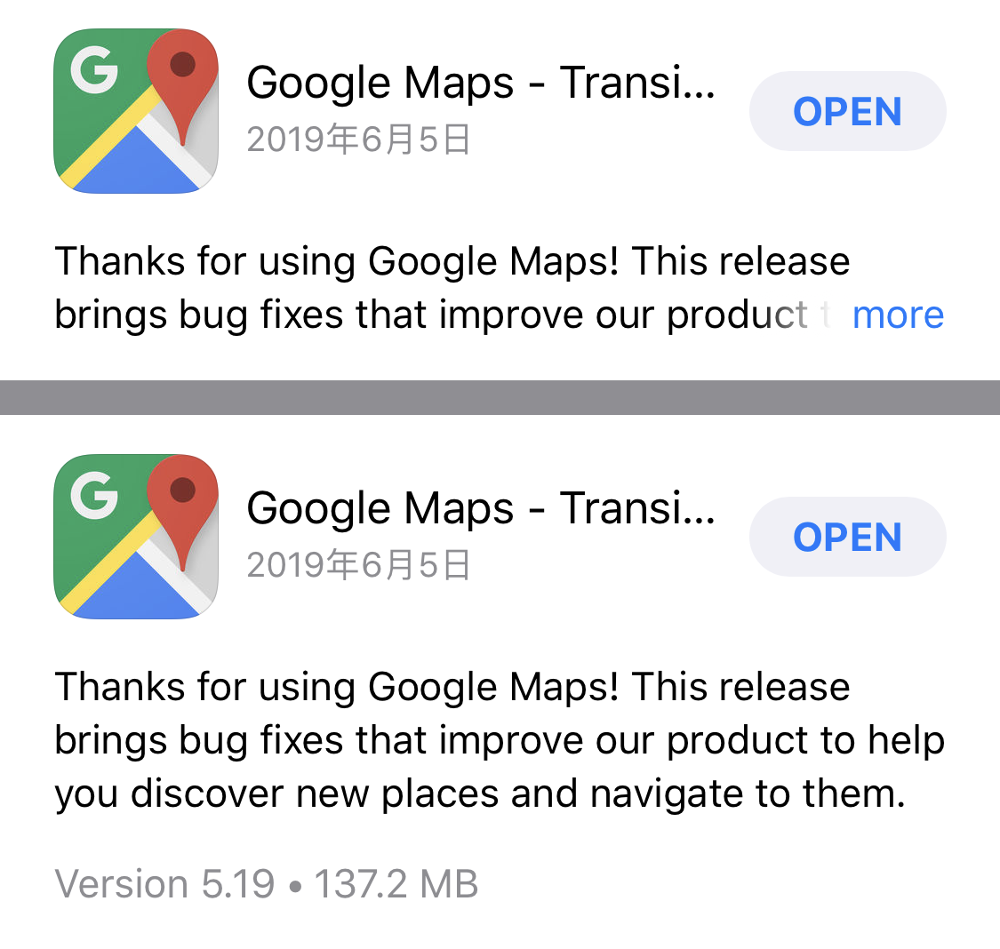

- 00 开篇词 为什么每一位大前端从业者都应该学习Flutter？.md.html
- 01 预习篇 · 从0开始搭建Flutter工程环境.md.html
- 02 预习篇 · Dart语言概览.md.html
- 03 深入理解跨平台方案的历史发展逻辑.md.html
- 04 Flutter区别于其他方案的关键技术是什么？.md.html
- 05 从标准模板入手，体会Flutter代码是如何运行在原生系统上的.md.html
- 06 基础语法与类型变量：Dart是如何表示信息的？.md.html
- 07 函数、类与运算符：Dart是如何处理信息的？.md.html
- 08 综合案例：掌握Dart核心特性.md.html
- 09 Widget，构建Flutter界面的基石.md.html
- 10 Widget中的State到底是什么？.md.html
- 11 提到生命周期，我们是在说什么？.md.html
- 12 经典控件（一）：文本、图片和按钮在Flutter中怎么用？.md.html
- 13 经典控件（二）：UITableView_ListView在Flutter中是什么？.md.html
- 14 经典布局：如何定义子控件在父容器中排版的位置？.md.html
- 15 组合与自绘，我该选用何种方式自定义Widget？.md.html
- 16 从夜间模式说起，如何定制不同风格的App主题？.md.html
- 17 依赖管理（一）：图片、配置和字体在Flutter中怎么用？.md.html
- 18 依赖管理（二）：第三方组件库在Flutter中要如何管理？.md.html
- 19 用户交互事件该如何响应？.md.html
- 20 关于跨组件传递数据，你只需要记住这三招.md.html
- 21 路由与导航，Flutter是这样实现页面切换的.md.html
- 22 如何构造炫酷的动画效果？.md.html
- 23 单线程模型怎么保证UI运行流畅？.md.html
- 24 HTTP网络编程与JSON解析.md.html
- 25 本地存储与数据库的使用和优化.md.html
- 26 如何在Dart层兼容Android_iOS平台特定实现？（一）.md.html
- 27 如何在Dart层兼容Android_iOS平台特定实现？（二）.md.html
- 28 如何在原生应用中混编Flutter工程？.md.html
- 29 混合开发，该用何种方案管理导航栈？.md.html
- 30 为什么需要做状态管理，怎么做？.md.html
- 31 如何实现原生推送能力？.md.html
- 32 适配国际化，除了多语言我们还需要注意什么_.md.html
- 33 如何适配不同分辨率的手机屏幕？.md.html
- 34 如何理解Flutter的编译模式？.md.html
- 35 Hot Reload是怎么做到的？.md.html
- 36 如何通过工具链优化开发调试效率？.md.html
- 37 如何检测并优化Flutter App的整体性能表现？.md.html
- 38 如何通过自动化测试提高交付质量？.md.html
- 39 线上出现问题，该如何做好异常捕获与信息采集？.md.html
- 40 衡量Flutter App线上质量，我们需要关注这三个指标.md.html
- 41 组件化和平台化，该如何组织合理稳定的Flutter工程结构？.md.html
- 42 如何构建高效的Flutter App打包发布环境？.md.html
- 43 如何构建自己的Flutter混合开发框架（一）？.md.html
- 44 如何构建自己的Flutter混合开发框架（二）？.md.html
- 特别放送 温故而知新，与你说说专栏的那些思考题.md.html
- 结束语 勿畏难，勿轻略.md.html
- 捐赠
15 组合与自绘，我该选用何种方式自定义Widget？
你好，我是陈航。
在上一次分享中，我们认识了Flutter中最常用也最经典的布局Widget，即单子容器Container、多子容器Row/Column，以及层叠容器Stack与Positioned，也学习了这些不同容器之间的摆放子Widget的布局规则，我们可以通过它们，来实现子控件的对齐、嵌套、层叠等，它们也是构建一个界面精美的App所必须的布局概念。
在实际开发中，我们会经常遇到一些复杂的UI需求，往往无法通过使用Flutter的基本Widget，通过设置其属性参数来满足。这个时候，我们就需要针对特定的场景自定义Widget了。
在Flutter中，自定义Widget与其他平台类似：可以使用基本Widget组装成一个高级别的Widget，也可以自己在画板上根据特殊需求来画界面。
接下来，我会分别与你介绍组合和自绘这两种自定义Widget的方式。
组装
使用组合的方式自定义Widget，即通过我们之前介绍的布局方式，摆放项目所需要的基础Widget，并在控件内部设置这些基础Widget的样式，从而组合成一个更高级的控件。
这种方式，对外暴露的接口比较少，减少了上层使用成本，但也因此增强了控件的复用性。在Flutter中，组合的思想始终贯穿在框架设计之中，这也是Flutter提供了如此丰富的控件库的原因之一。
比如，在新闻类应用中，我们经常需要将新闻Icon、标题、简介与日期组合成一个单独的控件，作为一个整体去响应用户的点击事件。面对这类需求，我们可以把现有的Image、Text及各类布局，组合成一个更高级的新闻Item控件，对外暴露设置model和点击回调的属性即可。
接下来，我通过一个例子为你说明如何通过组装去自定义控件。
下图是App Store的升级项UI示意图，图里的每一项，都有应用Icon、名称、更新日期、更新简介、应用版本、应用大小以及更新/打开按钮。可以看到，这里面的UI元素还是相对较多的，现在我们希望将升级项UI封装成一个单独的控件，节省使用成本，以及后续的维护成本。

图1 App Store 升级项UI
在分析这个升级项UI的整体结构之前，我们先定义一个数据结构UpdateItemModel来存储升级信息。在这里为了方便讨论，我把所有的属性都定义为了字符串类型，你在实际使用中可以根据需要将属性定义得更规范（比如，将appDate定义为DateTime类型）。
class UpdateItemModel {
String appIcon;//App图标
String appName;//App名称
String appSize;//App大小
String appDate;//App更新日期
String appDescription;//App更新文案
String appVersion;//App版本
//构造函数语法糖，为属性赋值
UpdateItemModel({this.appIcon, this.appName, this.appSize, this.appDate, this.appDescription, this.appVersion});
}
接下来，我以Google Map为例，和你一起分析下这个升级项UI的整体结构。
按照子Widget的摆放方向，布局方式只有水平和垂直两种，因此我们也按照这两个维度对UI结构进行拆解。
按垂直方向，我们用绿色的框把这个UI拆解为上半部分与下半部分，如图2所示。下半部分比较简单，是两个文本控件的组合；上半部分稍微复杂一点，我们先将其包装为一个水平布局的Row控件。
接下来，我们再一起看看水平方向应该如何布局。

图2 升级项UI整体结构示意图
我们先把升级项的上半部分拆解成对应的UI元素：
- 左边的应用图标拆解为Image；
- 右边的按钮拆解为FlatButton；
- 中间部分是两个文本在垂直方向上的组合，因此拆解为Column，Column内部则是两个Text。
拆解示意图，如下所示：

图3 上半部分UI结构示意图
通过与拆解前的UI对比，你就会发现还有3个问题待解决：即控件间的边距如何设置、中间部分的伸缩（截断）规则又是怎样、图片圆角怎么实现。接下来，我们分别来看看。
Image、FlatButton，以及Column这三个控件，与父容器Row之间存在一定的间距，因此我们还需要在最左边的Image与最右边的FlatButton上包装一层Padding，用以留白填充。
另一方面，考虑到需要适配不同尺寸的屏幕，中间部分的两个文本应该是变长可伸缩的，但也不能无限制地伸缩，太长了还是需要截断的，否则就会挤压到右边按钮的固定空间了。
因此，我们需要在Column的外层用Expanded控件再包装一层，让Image与FlatButton之间的空间全留给Column。不过，通常情况下这两个文本并不能完全填满中间的空间，因此我们还需要设置对齐格式，按照垂直方向上居中，水平方向上居左的方式排列。
最后一项需要注意的是，升级项UI的App Icon是圆角的，但普通的Image并不支持圆角。这时，我们可以使用ClipRRect控件来解决这个问题。ClipRRect可以将其子Widget按照圆角矩形的规则进行裁剪，所以用ClipRRect将Image包装起来，就可以实现图片圆角的功能了。
下面的代码，就是控件上半部分的关键代码：
Widget buildTopRow(BuildContext context) {
return Row(//Row控件，用来水平摆放子Widget
children: <Widget>[
Padding(//Paddng控件，用来设置Image控件边距
padding: EdgeInsets.all(10),//上下左右边距均为10
child: ClipRRect(//圆角矩形裁剪控件
borderRadius: BorderRadius.circular(8.0),//圆角半径为8
child: Image.asset(model.appIcon, width: 80,height:80)图片控件//
)
),
Expanded(//Expanded控件，用来拉伸中间区域
child: Column(//Column控件，用来垂直摆放子Widget
mainAxisAlignment: MainAxisAlignment.center,//垂直方向居中对齐
crossAxisAlignment: CrossAxisAlignment.start,//水平方向居左对齐
children: <Widget>[
Text(model.appName,maxLines: 1),//App名字
Text(model.appDate,maxLines: 1),//App更新日期
],
),
),
Padding(//Paddng控件，用来设置Widget间边距
padding: EdgeInsets.fromLTRB(0,0,10,0),//右边距为10，其余均为0
child: FlatButton(//按钮控件
child: Text("OPEN"),
onPressed: onPressed,//点击回调
)
)
]);
}
升级项UI的下半部分比较简单，是两个文本控件的组合。与上半部分的拆解类似，我们用一个Column控件将它俩装起来，如图4所示：

图4 下半部分UI结构示意图
与上半部分类似，这两个文本与父容器之间存在些间距，因此在Column的最外层还需要用Padding控件给包装起来，设置父容器间距。
另一方面，Column的两个文本控件间也存在间距，因此我们仍然使用Padding控件将下面的文本包装起来，单独设置这两个文本之间的间距。
同样地，通常情况下这两个文本并不能完全填满下部空间，因此我们还需要设置对齐格式，即按照水平方向上居左的方式对齐。
控件下半部分的关键代码如下所示：
Widget buildBottomRow(BuildContext context) {
return Padding(//Padding控件用来设置整体边距
padding: EdgeInsets.fromLTRB(15,0,15,0),//左边距和右边距为15
child: Column(//Column控件用来垂直摆放子Widget
crossAxisAlignment: CrossAxisAlignment.start,//水平方向距左对齐
children: <Widget>[
Text(model.appDescription),//更新文案
Padding(//Padding控件用来设置边距
padding: EdgeInsets.fromLTRB(0,10,0,0),//上边距为10
child: Text("${model.appVersion} • ${model.appSize} MB")
)
]
));
}
最后，我们将上下两部分控件通过Column包装起来，这次升级项UI定制就完成了：
class UpdatedItem extends StatelessWidget {
final UpdatedItemModel model;//数据模型
//构造函数语法糖，用来给model赋值
UpdatedItem({Key key,this.model, this.onPressed}) : super(key: key);
final VoidCallback onPressed;
@override
Widget build(BuildContext context) {
return Column(//用Column将上下两部分合体
children: <Widget>[
buildTopRow(context),//上半部分
buildBottomRow(context)//下半部分
]);
}
Widget buildBottomRow(BuildContext context) {...}
Widget buildTopRow(BuildContext context) {...}
}
试着运行一下，效果如下所示：

图5 升级项UI运行示例
搞定！
按照从上到下、从左到右去拆解UI的布局结构，把复杂的UI分解成各个小UI元素，在以组装的方式去自定义UI中非常有用，请一定记住这样的拆解方法。
自绘
Flutter提供了非常丰富的控件和布局方式，使得我们可以通过组合去构建一个新的视图。但对于一些不规则的视图，用SDK提供的现有Widget组合可能无法实现，比如饼图，k线图等，这个时候我们就需要自己用画笔去绘制了。
在原生iOS和Android开发中，我们可以继承UIView/View，在drawRect/onDraw方法里进行绘制操作。其实，在Flutter中也有类似的方案，那就是CustomPaint。
CustomPaint是用以承接自绘控件的容器，并不负责真正的绘制。既然是绘制，那就需要用到画布与画笔。
在Flutter中，画布是Canvas，画笔则是Paint，而画成什么样子，则由定义了绘制逻辑的CustomPainter来控制。将CustomPainter设置给容器CustomPaint的painter属性，我们就完成了一个自绘控件的封装。
对于画笔Paint，我们可以配置它的各种属性，比如颜色、样式、粗细等；而画布Canvas，则提供了各种常见的绘制方法，比如画线drawLine、画矩形drawRect、画点DrawPoint、画路径drawPath、画圆drawCircle、画圆弧drawArc等。
这样，我们就可以在CustomPainter的paint方法里，通过Canvas与Paint的配合，实现定制化的绘制逻辑。
接下来，我们看一个例子。
在下面的代码中，我们继承了CustomPainter，在定义了绘制逻辑的paint方法中，通过Canvas的drawArc方法，用6种不同颜色的画笔依次画了6个1/6圆弧，拼成了一张饼图。最后，我们使用CustomPaint容器，将painter进行封装，就完成了饼图控件Cake的定义。
class WheelPainter extends CustomPainter {
// 设置画笔颜色
Paint getColoredPaint(Color color) {//根据颜色返回不同的画笔
Paint paint = Paint();//生成画笔
paint.color = color;//设置画笔颜色
return paint;
}
@override
void paint(Canvas canvas, Size size) {//绘制逻辑
double wheelSize = min(size.width,size.height)/2;//饼图的尺寸
double nbElem = 6;//分成6份
double radius = (2 * pi) / nbElem;//1/6圆
//包裹饼图这个圆形的矩形框
Rect boundingRect = Rect.fromCircle(center: Offset(wheelSize, wheelSize), radius: wheelSize);
// 每次画1/6个圆弧
canvas.drawArc(boundingRect, 0, radius, true, getColoredPaint(Colors.orange));
canvas.drawArc(boundingRect, radius, radius, true, getColoredPaint(Colors.black38));
canvas.drawArc(boundingRect, radius * 2, radius, true, getColoredPaint(Colors.green));
canvas.drawArc(boundingRect, radius * 3, radius, true, getColoredPaint(Colors.red));
canvas.drawArc(boundingRect, radius * 4, radius, true, getColoredPaint(Colors.blue));
canvas.drawArc(boundingRect, radius * 5, radius, true, getColoredPaint(Colors.pink));
}
// 判断是否需要重绘，这里我们简单的做下比较即可
@override
bool shouldRepaint(CustomPainter oldDelegate) => oldDelegate != this;
}
//将饼图包装成一个新的控件
class Cake extends StatelessWidget {
@override
Widget build(BuildContext context) {
return CustomPaint(
size: Size(200, 200),
painter: WheelPainter(),
);
}
}
试着运行一下，效果如下所示：

图6 自绘控件示例
可以看到，使用CustomPainter进行自绘控件并不算复杂。这里，我建议你试着用画笔和画布，去实现更丰富的功能。
在实现视觉需求上，自绘需要自己亲自处理绘制逻辑，而组合则是通过子Widget的拼接来实现绘制意图。因此从渲染逻辑处理上，自绘方案可以进行深度的渲染定制，从而实现少数通过组合很难实现的需求（比如饼图、k线图）。不过，当视觉效果需要调整时，采用自绘的方案可能需要大量修改绘制代码，而组合方案则相对简单：只要布局拆分设计合理，可以通过更换子Widget类型来轻松搞定。
总结
在面对一些复杂的UI视图时，Flutter提供的单一功能类控件往往不能直接满足我们的需求。于是，我们需要自定义Widget。Flutter提供了组装与自绘两种自定义Widget的方式，来满足我们对视图的自定义需求。
以组装的方式构建UI，我们需要将目标视图分解成各个UI小元素。通常，我们可以按照从上到下、从左到右的布局顺序去对控件层次结构进行拆解，将基本视觉元素封装到Column、Row中。对于有着固定间距的视觉元素，我们可以通过Padding对其进行包装，而对于大小伸缩可变的视觉元素，我们可以通过Expanded控件让其填充父容器的空白区域。
而以自绘的方式定义控件，则需要借助于CustomPaint容器，以及最终承接真实绘制逻辑的CustomPainter。CustomPainter是绘制逻辑的封装，在其paint方法中，我们可以使用不同类型的画笔Paint，利用画布Canvas提供的不同类型的绘制图形能力，实现控件自定义绘制。
无论是组合还是自绘，在自定义UI时，有了目标视图整体印象后，我们首先需要考虑的事情应该是如何将它化繁为简，把视觉元素拆解细分，变成自己立即可以着手去实现的一个小控件，然后再思考如何将这些小控件串联起来。把大问题拆成小问题后，实现目标也逐渐清晰，落地方案就自然浮出水面了。
这其实就和我们学习新知识的过程是一样的，在对整体知识概念有了初步认知之后，也需要具备将复杂的知识化繁为简的能力：先理清楚其逻辑脉络，然后再把不懂的知识拆成小点，最后逐个攻破。
我把今天分享讲的两个例子放到了GitHub上，你可以下载后在工程中实际运行，并对照着今天的知识点进行学习，体会在不同场景下，组合和自绘这两种自定义Widget的具体使用方法。
思考题
最后，我给你留下两道作业题吧。
- 请扩展UpdatedItem控件，使其能自动折叠过长的更新文案，并能支持点击后展开的功能。

- 请扩展Cake控件，使其能够根据传入的double数组（最多10个元素）中数值的大小，定义饼图的圆弧大小。
欢迎你在评论区给我留言分享你的观点，我会在下一篇文章中等待你！感谢你的收听，也欢迎你把这篇文章分享给更多的朋友一起阅读。
© 2019 - 2023 Liangliang Lee. Powered by gin and hexo-theme-book.